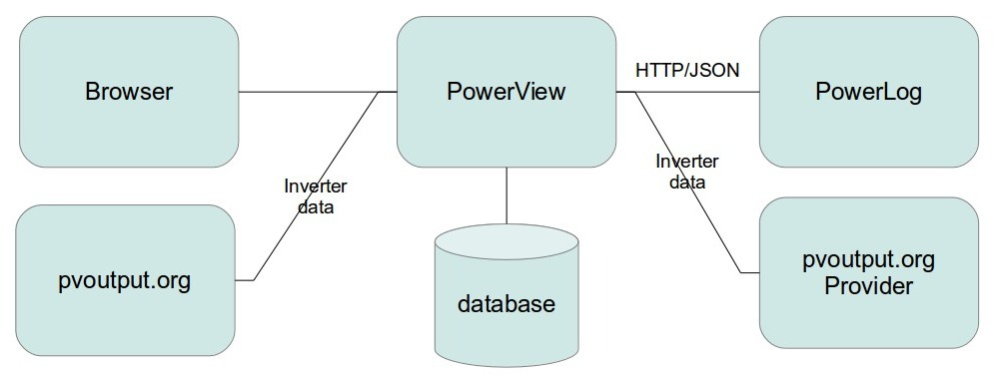

Thank you for taking an interest into PowerView.
PowerView provides a home overview for electricity consumption/production, water consumption and heat consumption. PowerView organizes and visualizes reading data per. meter or inverter using a unique label name representing each. Features are:
The below figure presents a deployment of PowerView

PowerView accepts meter and inverter readings from PowerLog and a pvoutput.org facade. The pvoutput.org facade intercepts the inverter data and forwards the inverter data to official pvoutput.org. The meter and inverter readings are stored in a database. Using a browser it is possible to visualize the database reading content.
Meter consumption readings is sensitive information. Therefore PowerView is intended to operate in the home area network. It is not advisable puting the sensitive information into the cloud unless appropriately secured.
Pretty much any box will do as long as it is capable of running .NET Framework (version 4.5.2 or greater) and has the necessary connectivity interfaces. Some examples: Raspberry Pi, Linux desktop/laptop, Windows desktop/laptop.
PowerView has been tested with the following configuration.
PowerView Box: Raspberry Pi (Raspbian Buster) with an ethernet cable for network access.
Should you need assistance setting up PowerView, or come across bugs or ideas for improvements first try searching and consulting the forum where you acquired your PowerView distribution package. If that doesn't help try contacting the PowerView author via email: pvsunlog@gmail.com.
If you are satisfied with the PowerView product please consider showing your appreciation. E.g. by dropping an email with a couple of kind words to pvsunlog@gmail.com.
Before starting to setup PowerView do make sure to read the software license agreement.
PowerView collects anonymized statistical application usage data for the purpose of continuous improvemnt of the application. No meter measurement data are tracked nor are any person sensitive data of any kind.
This section lists the necessary steps for setting up PowerView.
.